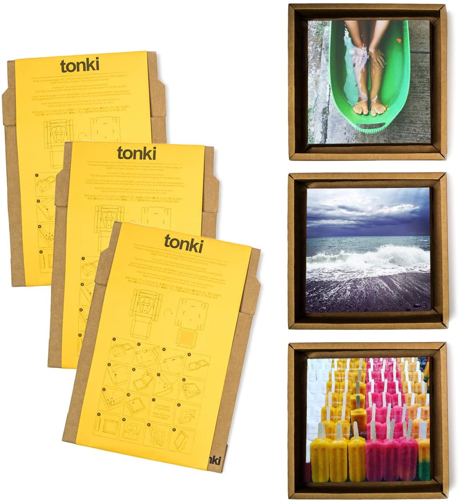
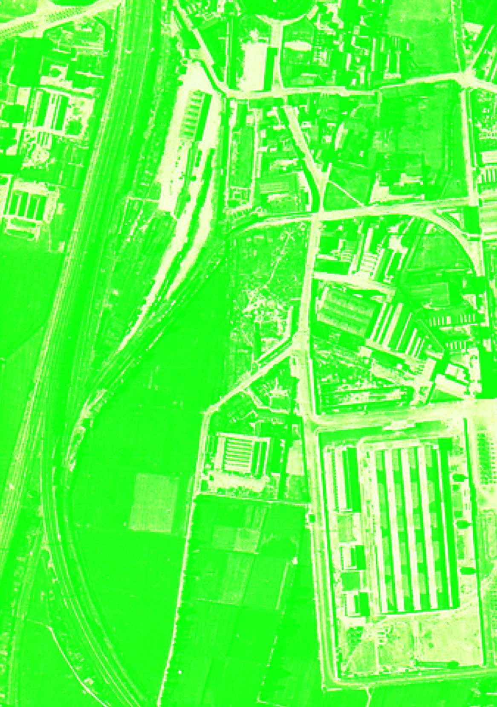
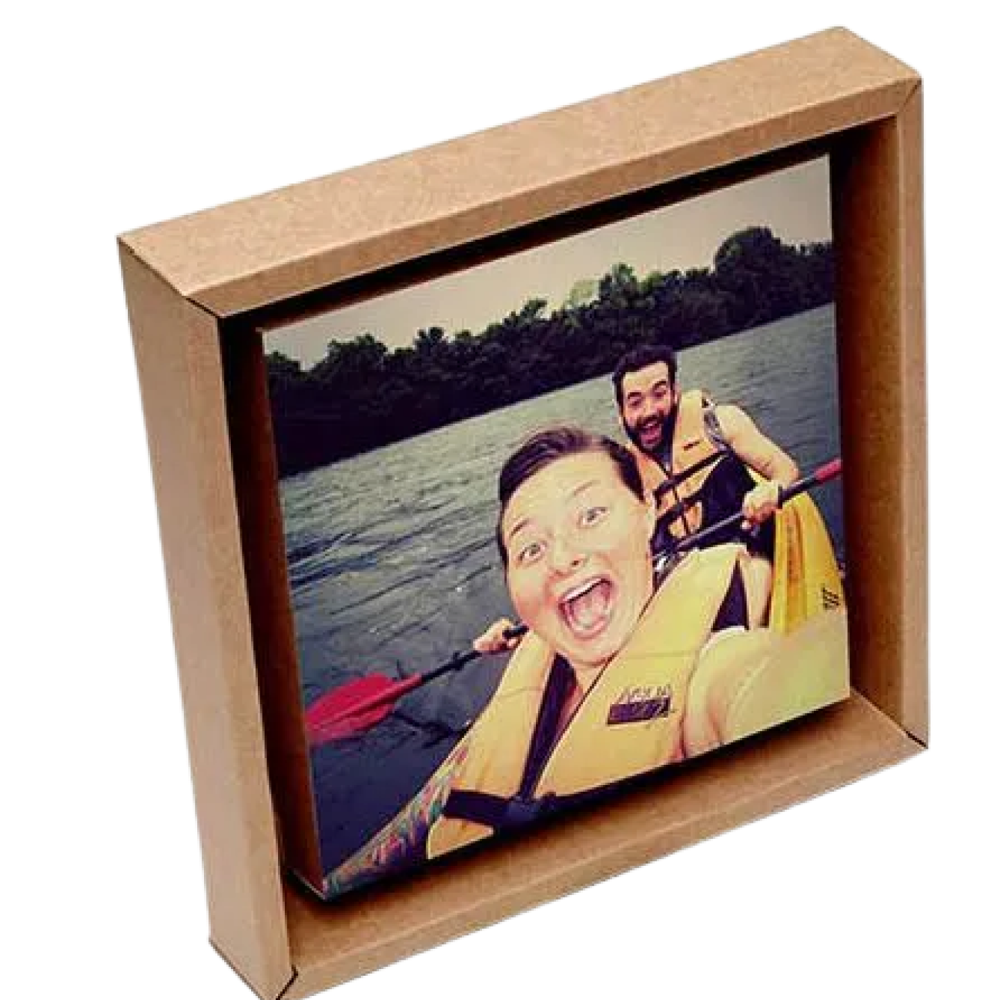

Beta è domande, come quelle che si sono posti i ragazzi di Fotografia, Graphic Design, Storytelling e Digital Development, mescolando e applicando le competenze apprese nel proprio percorso a Mohole. Un progetto che non pretende risposte e parte da un’indagine sui “i volti e i vuoti di Lambrate” al fine di realizzare una mostra fotografica in collaborazione con Tonki, la sua curatela, un libro d’artista e una landing page.
B'22
Project
L'ambra
di Lambrate
[01]Lunghe ombre al tramonto in via Conte Rosso. Via Sbodio raccoglie le ultime auto, briciole al limitare del tavolo pronte a cadere nel pugno chiuso della notte. Piazza Bottini è un deserto di rotaie; voci senza volto si accendono nei vicoli e si spengono nei bar. Il silenzio allora corre fino a piazza Caduti e Dispersi di Russia. È lì che ogni notte ritorna, guardiano dei volti che furono. Le identità, perdute di Lambrate e dei suoi abitanti rinchiuse negli scatti di una mostra fotografica, faccia a faccia con i loro riflessi reali.

Le
Flâneur
[02]Immergersi per le strade, tra la gente, senza cercare Lambrate, ma lasciandosi trovare. Baudelaire lo chiamava flaneur, il dolce vagabondare per il gusto della suggestione. E nell’immaginarne l’essenza si incontrano i volti, degli edifici e dei passanti. Annotare per non dimenticare. Ritratti tra le pagine di un taccuino. E poi materiali, progetti, ispirazioni. Fotografie. Idee. Testi. Pagina dopo pagina: un libro d’artista.

About
Beta
[03]I fenici, secoli prima dei greci, scrivevano e parlavano di casa. E casa sono spazi e ambienti familiari. Da noi, beta è un libro d’artista e si chiama Flaneur, ha le mani in tasca e nessuna meta. Si perde nel reticolo della città, ma si lascia inseguire tra le pagine. Beta è anche una mostra di fotografia e curatela. Un percorso di suggestioni cromatiche, visioni e cornici di cartone. Ma beta è anche qui. Tra le righe che esplorano, accompagnano, e aprono porte.
About

[03]L’idea è nata quasi per caso in un pomeriggio londinese di 3 anni fa. In quel periodo Alessandra era a Londra dalla sorella e Ruggero ha deciso di partire dall’Italia per farle una sorpresa. Ha fatto un viaggio abbastanza avventuroso in cui ha cambiato diversi mezzi di trasporto tra cui l’autostop. Arrivato alla porta di casa si è reso conto che non aveva portato un regalo e frugando nello zaino la cosa più curiosa che ha trovato era il pezzo di cartone su cui aveva scritto l’indirizzo per l’autostop. Dopo grandi festeggiamenti Alessandra ha appiccicato su quel pezzo di cartone una loro fotografia. Da li a poco sono tornati insieme in Italia e hanno inventato un nome per quel prodotto che avrebbe cambiato le loro vite.
